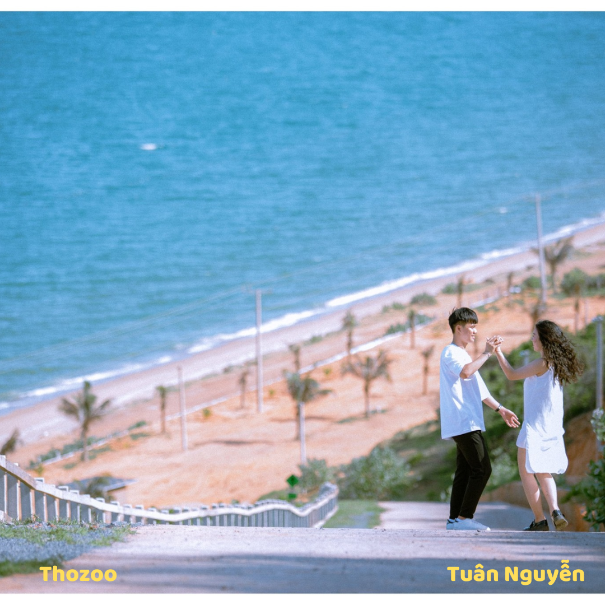
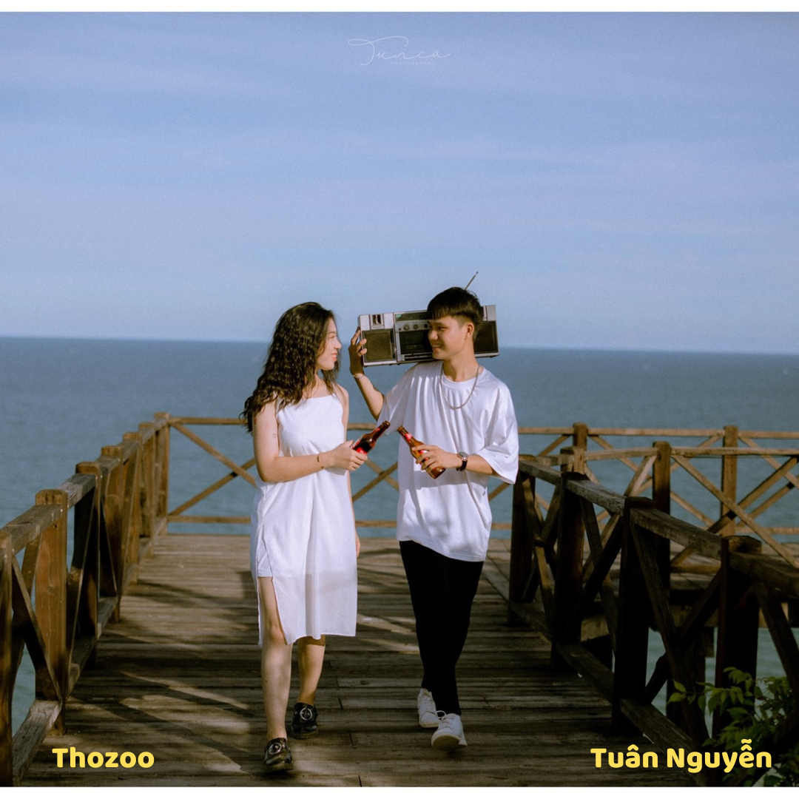
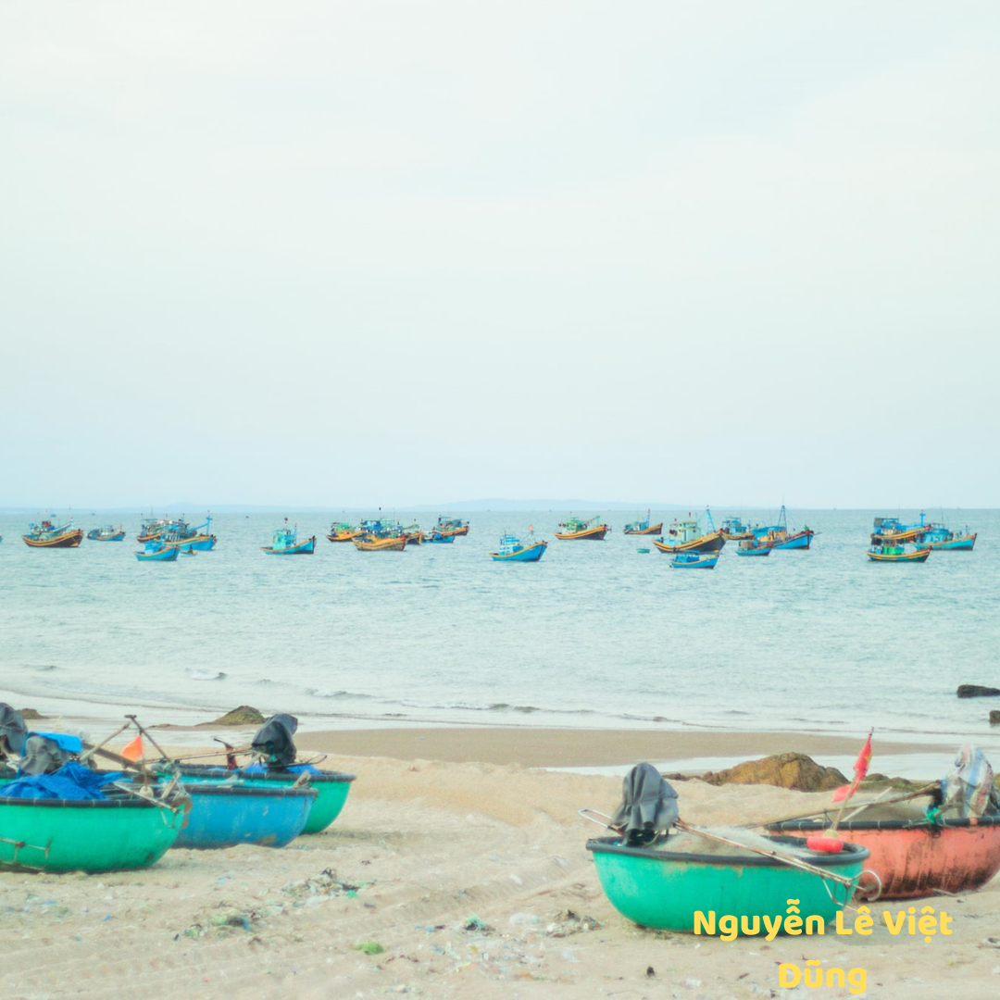
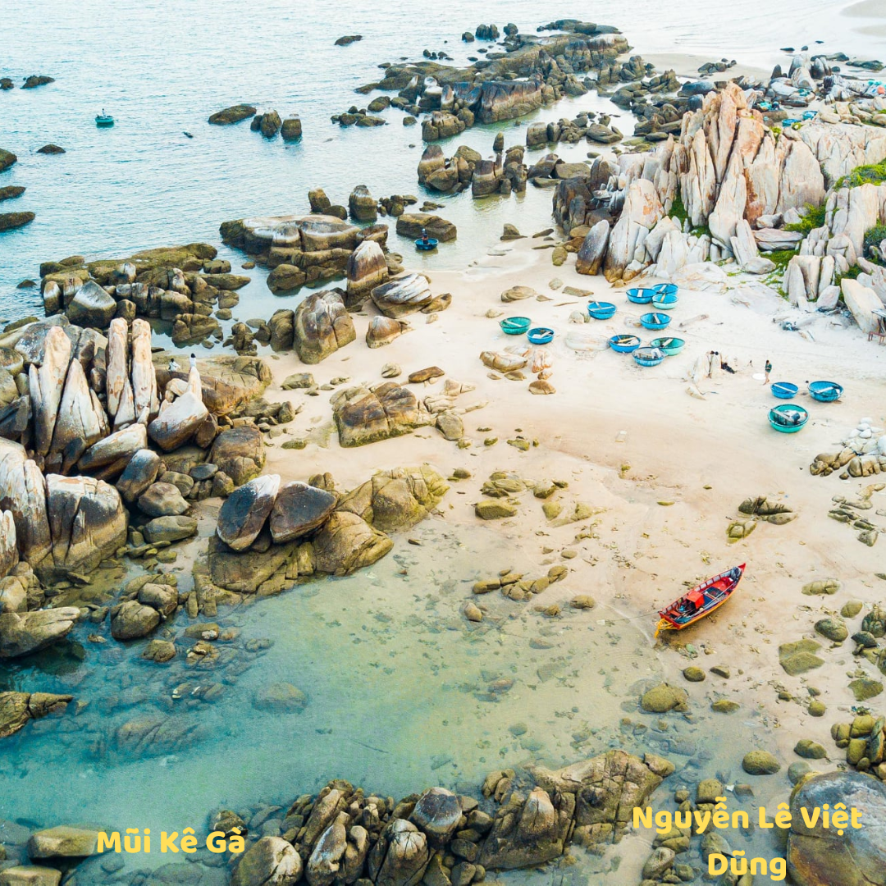

LỊCH SỬ
VĂN HÓA
DU LỊCH
1697
Lập Bình Thuận phủ gồm 2 huyện An Phước và Hòa Đa. Sau cải thành Bình Thuận Dinh
1827
Minh Mạng đặt ra hai phủ Ninh Thuận và Hàm Thuận và hai huyện Tuy Phong và Tuy Định. Bình Thuận được đặt thành tỉnh
1900
Vua Thành Thái đặt huyện Tuy Lý và lấy huyện Tánh Linh trước thuộc Đồng Nai Thượng sáp nhập vào Bình Thuận
1976
Bình Thuận sáp nhập với Bình Tuy và Ninh Thuận thành tỉnh Thuận Hải
1992
Tỉnh Thuận Hải được chia thành 2 tỉnh mới lấy tên là Ninh Thuận và Bình Thuận theo Quyết định chia tách ghi ngày 26 tháng 12 năm 1991
lễ vào đạo bà ni
Lễ hội Rija Nagar
kéo lưới
Lễ hội Kate của người Chăm
Nghề làm bánh hỏi truyền

 
